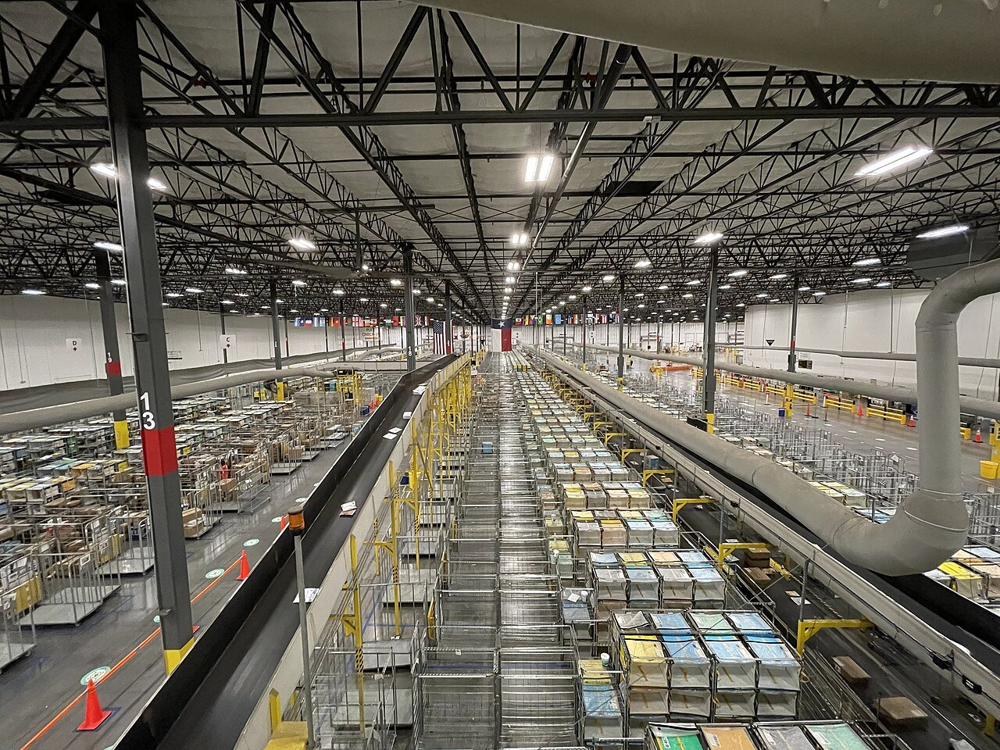
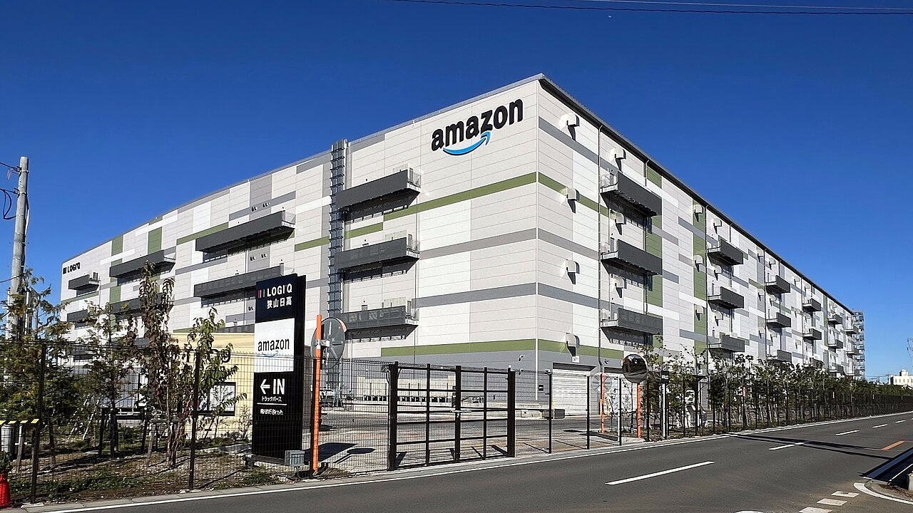
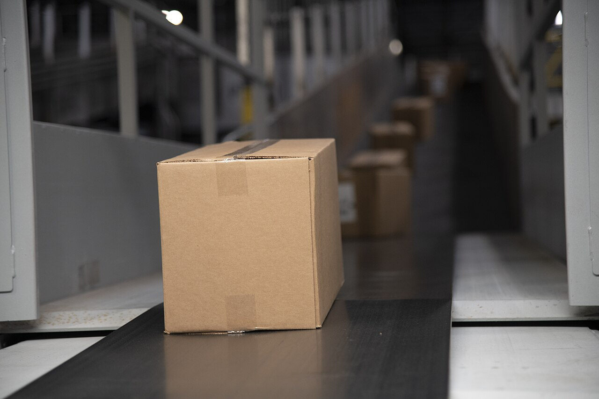
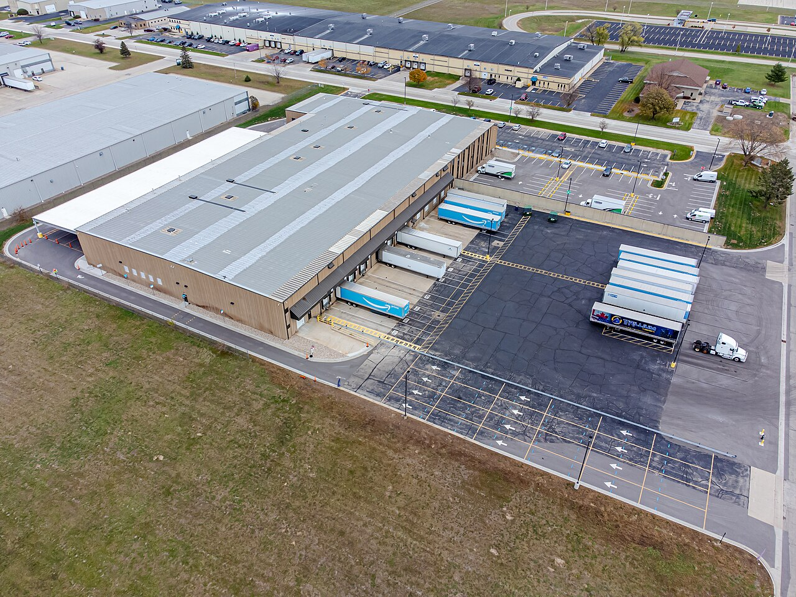
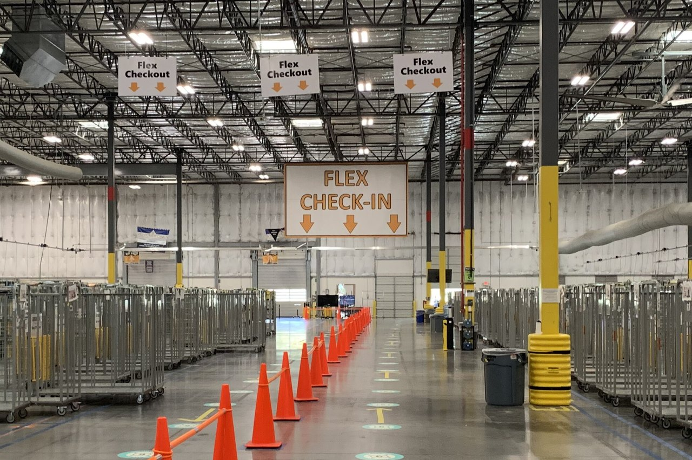
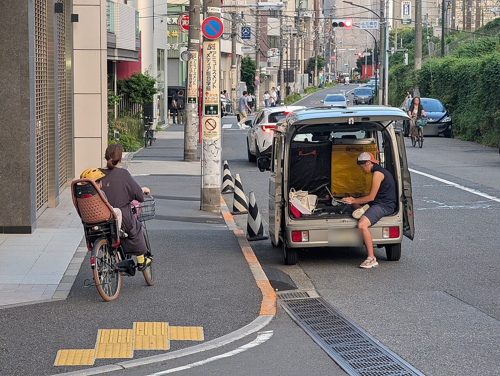
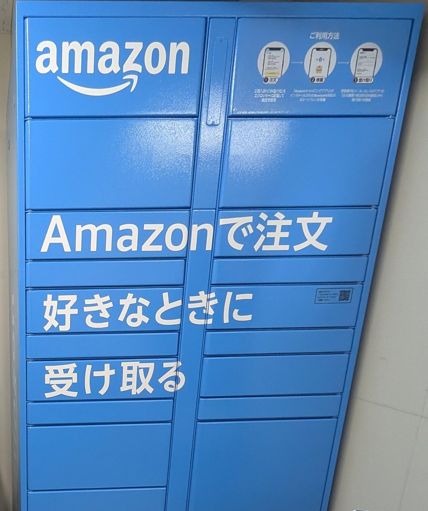

技術・発明 TechnologyAmazon は、なぜ注文した翌日に届く？
夜に注文したのに、翌日には玄関に箱がある。そのしくみを、注文から玄関までの流れ図、倉庫の中の図、日本の拠点の地図でたどります。箱はどこで待っていて、だれが運んでいるのでしょう？
2026.11.01 UP 約5分で読める 文：SOMOSOMO編集部
写真：配送拠点の中／Yourusernamewillbepublic2（2020年、CC0）
夜の11時半。ソファでスマホを開き、切らしていた洗剤を Amazon で注文します。画面には「明日お届け」。翌日の夕方、玄関には本当に段ボール箱が届いています。
2025年7月、Amazon は日本で、夜11時59分までの注文を翌日に届ける配送を、全国へ順次広げていると発表しました。地域や商品によっては、翌日に届かないこともあります。
こうした速さは、日本だけの話ではありません。2025年にプライム会員向けに、世界で当日か翌日に届いた品物は130億個を超えたといいます（Amazon、2026年2月）。それにしても、何百kmも離れているかもしれない倉庫から、どうやって一晩で玄関まで来るのでしょうか。
In a word
売れそうな物を、注文の前から近くの倉庫 に置いているから。
Fig.01 注文から玄関まで
STEP 01 ／ たとえば夜11時半 注文 スマホで注文すると、品物のある近くの倉庫へ指示が届く STEP 02 ／ たとえば夜のうち 倉庫（FC） 棚がロボットで運ばれてきて、取り出し・箱詰め・ラベル貼り STEP 03 ／ たとえば明け方まで トラック 行き先ごとに分けて、町の近くの配送拠点へ STEP 04 ／ たとえば朝 配送拠点（DS） 配達のルートごとに、荷物を分け直す STEP 05 ／ たとえば夕方 玄関へ 地域の配送会社や個人の配達員が、玄関・置き配・ロッカーへ
見どころは、「倉庫」と「玄関」のあいだに、もう1つの拠点があること。遠くの大きな倉庫から直接ではなく、町の近くで荷物を分け直してから届けます。時刻は流れをつかむための一例で、実際の時刻は地域や荷物によって違います。Amazon の説明をもとに編集部が簡単にした図です。
01
Before You Order
速さは、注文する前から始まっている
Amazon の大きな倉庫は「フルフィルメントセンター（FC）」と呼ばれます。フルフィルメントは「注文を満たす」という意味。商品を預かり、注文が来たら箱に詰めて送り出すまでを、1つの建物で行います。
日本のFCは、千葉みなとFCの新設が発表された2023年6月の時点で25か所以上。2025年8月には名古屋みなとFCも動き出しました。
大事なのは、どこに置くかです。客から遠い倉庫にしか在庫がなければ、何百kmもトラックで運ぶことになります。そこで Amazon は、どの地域で何が売れそうかを予測し、売れる前に、売れそうな場所の近くへ 商品を運んでおきます。

郊外に建つ、大きな倉庫 埼玉県にある Amazon の狭山日高FC。道路沿いに、何階もある大きな建物が奥まで続いています。こうした倉庫に、地域で売れそうな商品が前もって集められます。写真：Amazon Sayama Hidaka Fulfillment Center 2023-11-19 ／Asanagi（2023年、CC0）
近くの倉庫から出すほど速い、という考え方は、アメリカでもはっきり形になっています。2023年、国じゅうを1つの網で結ぶやり方をやめ、全国を8つの地域に分けました。地域ごとに品ぞろえを置き、なるべく地域の中で届けるためです。
Amazon の研究部門の記事（2023年7月）によると、注文の品がすべて客と同じ地域の倉庫からそろう割合は、地域に分ける前の62%から76%に上がりました。
さらに先を行く発想もあります。特許の記録によると、Amazon は2013年12月、アメリカで「予測出荷」の特許を取りました。客が注文する前に、買いそうな人のいる地域へ荷物を送り出し、運んでいるあいだに届け先を決める、という方法です。
ただし、特許を取ることと、実際に使うことは別 です。この方法をどこまで使っているのかは、明らかにされていません。持ち帰りたいのは、方法そのものより考え方のほう。「注文を待ってから運ぶ」のではなく、「売れそうな物を、予測して先に近くへ置く」のです。
02
Shelves That Walk
倉庫では、人ではなく棚が歩く
注文が入ると、倉庫の中で商品を取り出す「ピッキング」が始まります。昔ながらの倉庫では、人が台車を押して棚のあいだを歩き回ります。倉庫が広く、注文が多いほど、歩く時間が長くなります。
これを逆にしたのが、アメリカのキバ・システムズという会社です。床を走る平たいロボットが、商品の入った棚の下にもぐりこんで持ち上げ、棚ごと人の待つ持ち場まで運んできます 。Amazon は2012年3月、この会社を約7億7,500万ドルで買うと発表しました。
Fig.02 棚が人のところへ来る倉庫
持ち場
箱詰め・ラベル
保管エリア
1
2
3
4
棚 商品をしまう棚。ロボットが下にもぐって持ち上げられる形をしています。ロボット 注文の商品が入った棚を持ち上げ、人の待つ持ち場まで運びます。人の持ち場 画面が「どの段の、どの商品か」を示し、人が手で取り出します。箱詰めとラベル 箱の大きさはコンピューターがすすめ、宛名のラベルは機械が貼ります。
見どころは、点線の空いた場所。棚のほうが動くので、人は持ち場から離れずに次々と商品を取り出せます。Amazon の説明をもとに、編集部が簡単にした模式図です。
会社は2015年に「Amazon Robotics」と名前を変えました。2025年7月には、倉庫で動くロボットが世界で100万台に達します。その100万台目は、日本の倉庫に入りました。
持ち場で取り出された商品は、箱に詰められ、機械で宛名のラベルを貼られます。そのあと重さを量って、注文と中身が合っているかを確かめ、行き先ごとにトラックへ振り分けられます。

ベルトの上を進む箱 アメリカ・テキサス州にある宅配会社 UPS の仕分け場で、ベルトコンベヤーに乗って進む段ボール箱。箱詰めのあとの荷物も、こうして機械の上を流れて行き先ごとに分けられます。写真はイメージです。写真：Packages on UPS conveyor belt ／アメリカ農務省（2020年、パブリックドメイン）
03
The Last Mile
最後の数キロは、だれが運ぶのか？
物流では、客の玄関までの最後の区間を「ラストワンマイル」と呼びます。1マイルは約1.6km。距離は短くても、家を1軒ずつ回るので、いちばん人手のかかる区間です。
FCで箱に詰められた荷物は、まずトラックでDS（デリバリーステーション）へ運ばれます。町の近くに置かれた配送拠点で、ここで荷物を配達のルートごとに分け直します。2025年には、岡山や北九州など6か所に新しいDSが開きました。
Fig.03 北から南へ、客の近くに拠点を置く
北広島
野々市
名古屋みなと
岡山南
北九州
関東（拡大）
狭山日高
柏
江東
千葉みなと
FC（一部）
2025年に開いた配送拠点
見どころは、2025年に開いた白い丸が、北海道から九州まで散らばっていること。客の近くに拠点を増やして、玄関までの距離を縮めています。拠点が集まる関東は、右下に拡大しています。記事で触れた拠点だけを示した図で、全国の拠点の一部です。地図：Natural Earth（パブリックドメイン）をもとに編集部が作成。


町の近くの、仕分けの場所 左はアメリカ・ウィスコンシン州の Amazon のデリバリーステーションを空から見たもの。見どころは、建物の片側にずらりと横づけされたトレーラーの荷台。大きな荷台ごと、荷物が運び込まれます。右はアメリカのデリバリーステーションの中。個人の配達員のしくみ「Flex」の受付の案内が下がっています。写真：左はAmazon delivery station ／Wikideas1（2023年、CC0）、右はAmazon Logistics Interior ／Yourusernamewillbepublic2（2020年、CC0）
DSから玄関まで運ぶのは、Amazon の社員でないことが多いです。荷物を受け持つのは、Amazon と契約した地域の配送会社（デリバリーサービスパートナー）と、Amazon と直接契約した個人の配達員です。
個人が自分の車で運ぶしくみは「Amazon Flex」と呼ばれます。働く日と時間を自分で選べるのが特徴で、日本では2019年に始まり、2025年には47都道府県すべてに広がりました。

路上の小さな受け渡し場所 2025年7月、東京・恵比寿の路上で、後ろの扉を開けた軽自動車。撮影者は、恵比寿にある Amazon の小さな配送の拠点と説明しています。ラストワンマイルの荷物は、こうした小さな車で町の中を回ります。写真：Local Amazon delivery hub in Ebisu ／Syced（2025年、CC0）
04
Who Carries the Load
宅配危機が転機に。速さの負担は、だれが背負うのか？
日本で Amazon が自前の配送網を広げた背景として、よく挙げられるのが2017年の「宅配危機」です。2017年2月、宅配便の最大手、ヤマト運輸の労働組合が、春の賃金交渉で、引き受ける荷物の量を減らすよう会社に求めたのです。ネット通販の荷物が増え、運転手は昼休みも取りにくくなっていました。
同じ年の4月、ヤマトは27年ぶりに基本運賃の値上げを発表します。Amazon の当日配送の荷物を減らしていく方針だとも報じられました。Amazon はその後、地域の配送会社に任せる荷物を増やし、自前の配送拠点を広げていきました。この危機は、その大きなきっかけの1つとされます。
「明日届く」の裏には、毎日、町を回る人の手がある。
速さの負担は、町を回る人にもかかります。2023年9月、神奈川県の横須賀労働基準監督署は、運送会社を通じて Amazon の配達を業務委託で請け負っていた配達員のけがを、労災と認めました。
労働組合の発表（2023年10月）によると、アプリなどを通じて、実際には会社の指示のもとで働いていたと判断されたといいます。これは1人の働き方についての判断で、委託で働く人すべてに当てはまるわけではありません。
留守の家への再配達も、運転手の負担です。玄関前に置く「置き配」や、受け取りロッカーは、この負担を減らすための工夫です。

コンビニの中の受け取り口 2026年1月、東京・代々木のコンビニの店内にある Amazon の受け取りロッカー。見どころは右上の、スマホの画面を描いた3つの絵。受け取りまでの手順を示しています。好きな時間に自分で取り出せるので、再配達がいりません。写真：郵便 and Smari and Amazon delivery lockers inside convenience store ／Syced（2026年、CC0）
05
By the Numbers
数字で見る、Amazon の配送網と日本の宅配
65以上 日本にある Amazon のデリバリーステーション（町の近くの配送拠点）の数2025年12月、Amazon の発表
120社超 Amazon の荷物を運ぶ、地域の配送会社（デリバリーサービスパートナー）の数2025年、Amazon の発表
約 8.4% 宅配便のうち、留守などで再配達になった割合。およそ12個に1個で、Amazon に限らない全体の数字2025年4月、国土交通省の調査
Here's the Fun Part
ここが面白い！
スーパーなら、洗剤は洗剤の棚、本は本の棚に並びます。ところが Amazon の倉庫では、商品が「ランダム」にしまわれている といいます。種類の違う商品が、同じ棚に隣り合って入っているのです。
Amazon 自身は、直感に反するけれど、さまざまな商品をすばやく取り出して箱に詰めやすくなる、と説明しています。物流の解説記事では、取り出す人が歩き回る時間が減り、1人1人の作業量もそろいやすい、とされます。
取り違えを防ぐ工夫もあります。Amazon が2012年に取った特許には、似た商品を同じ棚や近くの棚に入れないようにして、取り出しの誤りを防ぐ方法が書かれています。
どの棚のどこに何があるかは、人ではなくコンピューターが覚えています。人にとってはめちゃくちゃでも、コンピューターにとっては取り出しやすい並べ方 だ、というわけです。
次に Amazon の箱を開けたら、想像してみてください。その品物は、見知らぬ品物たちと同じ棚で、あなたの注文を待っていたのです。